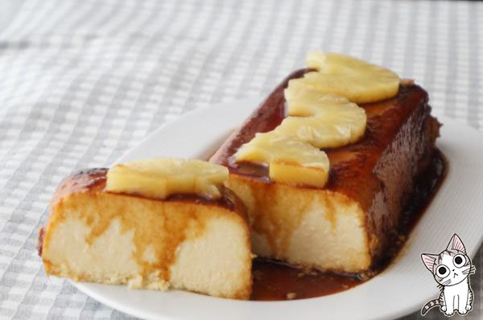
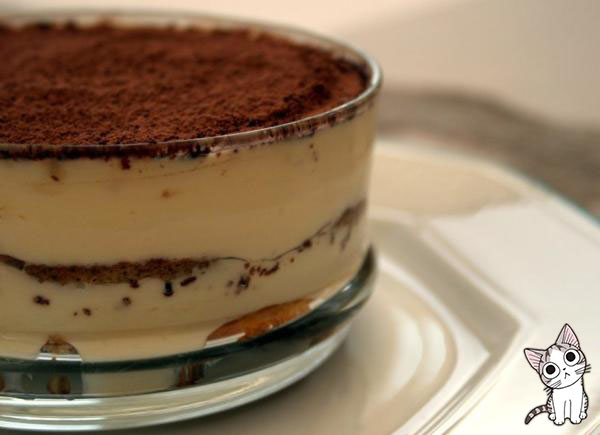
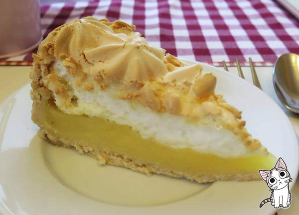
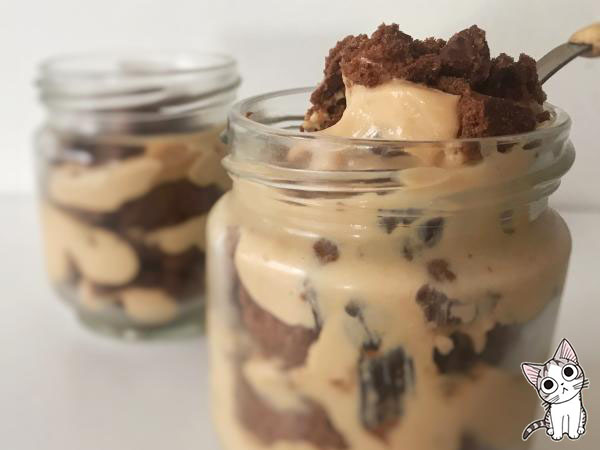

Los Mas Pedidos
Flan de piña
El flan es un postre casero tradicional que en todas las casas se prepara, pero podemos darle la vuelta y preparar flanes de distintos sabores. Esta receta podrás prepararla con piña en lata, en almíbar o piña natural y, sea como sea, el resultado será un flan único con muy buen sabor.
Mira aquí la receta.
Tiramisu
El tiramisú es uno de los postres más famosos y apreciados de Italia, una delicia que puede encontrarse ahora en muchos países y culturas. El secreto para hacerlo está en preparar correctamente sus mezclas por separado, pues es lo que más distingue a este maravilloso postre.
Mira aquí la receta.
Lemon Pie
El pastel de limón es un postre muy popular. En esta ocasión, te enseñamos a prepararlo de forma tradicional, un lemon pie con una base de masa brie y terminado con una capa de merengue tostado. ¡Una delicia!
Mira aquí la receta.
Chocortorta en Vaso
La chocotorta es uno de los postres preferidos de los argentinos. No solo por su sabor, sino por lo fácil que es su preparación, la cual ni siquiera necesita horno. En este caso, compartimos contigo una versión hecha en vasos para sorprender a tus invitados con porciones individuales y una original presentación
Mira aquí la receta.